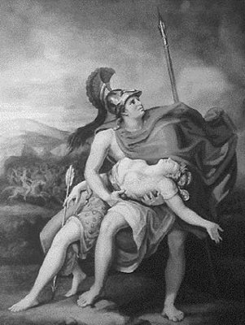

Amazonlar denen anaerkil kadın kavimleri ilkçağlarda, Karadeniz ve Akdeniz coğrafyasındaki değişik merkezlerde, hep kraliçelerinin adlarını taşıyan kentler ve krallıklar kurdular... İzmir, Efes, Mirina, Grineum bunlardan yalnızca birkaçıydı... Latin ve Grek ozanların şiirlerinde de onlardan uzun uzun söz edildi. Nice ressamlar desenlere döktü, heykeltıraşlar yonttukları mermerlere işledi onları...
Ve gene Yunanlıların çevre coğrafyalardan alıp da benimsedikleri ve kendi ulusal kimlikleriyle bezedikleri söylenceler arasında Amazonlar, en ön sıralarda geliyordu. Yunanistanlı Arganotlar bile Altın Post'u almaya gittikleri Gürcistan'dan dönüşleri sırasında, Karadeniz kıyılarında oturan Amazonlarla tanıştılar... Onlarla uzun süre yarenlik ettiler...
Zaten Yunanlıların çeşitli boylar halinde Hindistan yörelerinden şimdiki yurtlarına gelmezden daha önce, Anadolu'da anaerkil bir toplum düzeninin egemen olduğunu kanıtlıyordu bulunan bütün belgeler. Amazonlar da bundan beş-altı bin yıl önceki bu anaerkil toplum düzenine uygun olarak yaşıyorlardı. Günümüzdeki anlamıyla evlilik de söz konusu olmadığından, çocuk yapacağı erkeği kendisi seçiyordu kadın. Doğan çocuklar da anasının soyadıyla anılıyordu. O yüzden günümüze dek gelen bir geleneğe göre de, örneğin ölülerin gömüleceği sırada, babalarının değil de analarının kim olduğu soruluyordu... Zaten Amazonların taptığı Anatanrıça Kibele'nin kadın olması da, bu anaerkil düzenin varlığını kesin olarak kanıtlıyordu.
Amazon denen kadınların en belirgin özelliği, savaşçı yönleriydi. Ve bu yüzden de at, yaşam boyu onların ayrılamadıkları yoldaşları oldu. Savaş sırasında onlar, Yunanistanlılar gibi atların çektiği arabalarda değil, atın üstüne binmiş olarak ok, yay kullanıyorlardı... Gene bu kadınların silah olarak iki ağızlı balta kullandıklarını gösteren Hitit ve Girit kabartmaları da bulundu... Bir söylenceye göre de yayı göğüslerine dayayıp iyice gerebilmek için bir memelerini aldırıyorlardı!.. Buna kanıt olarak da, Anadolu dillerinin birinde, "amazon" demenin "memesiz" anlamına geldiğini söylüyordu bazı dilbilimciler. Ama bazıları da; aynı sözcükteki "a" ekinin şiddet ve kuvvet anlamına geldiğine ve "mazon" da meme demek olduğuna göre Amazon sözcüğünün, "memesiz" değil, düpedüz "güçlü kuvvetli memeleri olan kadın" anlamına geldiğini öne sürüyorlardı!.. Zaten Amazonlarla ilgili olarak bulunan binlerce heykel ve resmin hiçbirinde, onları tek memeli olarak gösteren bir şekil ya da simgeye rastlanmadı!.. Bu da ikinci savın doğruluğunu pekiştiriyordu.
Aslında savaş tanrısı Ares'le, Zeus'un güzel mi güzel kızı Harmoniya'nın aşklarından dünyaya gelmişti Amazonlar. Bu yüzden savaşçı yönleriyle babaları savaş tanrısı Ares'in burnundan hık deyip düşmüş gibiydiler! Homeros bile İlyada destanında onlar için, "erkek gibi kadınlar" söylemini kullanıyordu... Ama güzellikleri ve soyluluklarıyla da Zeus'un kızı Harmoniya'ya çekmişlerdi...
Çok doğal olarak dünyanın neresinde bir insan toplumu varsa, o toplum başlangıçta anaerkil bir toplumdu; orada egemenlik ve söz kadınındı. Çünkü kadının çocuk doğurduğu, ama erkeğin buna pek bir katkısı olmadığı o zamanlar da biliniyordu. İlk tohumlanma süreciyle doğum arasındaki o uzun dokuz ayda, erkeğin varlığı ve katkısı zaten unutulup gidiyordu...
Amazonlar; Sümerlilerin İnanna dedikleri Anatanrıça Kibele'ye tapıyorlardı. Ve erkekleri de, hem evlerde hem tarlalarda köle olarak kullanıyorlardı! İşte bu erkek köleler bir gün ülkelerine gelen bir yabancıdan, dünyamızda Zeus adında erkek bir Baba Tanrı'nın ortaya çıktığını duydular. Bunun üzerine onlar da bir kadın olan tanrıça Kibele'yi bırakıp Zeus'a tapmaya başladılar... Bunun ardından da; "Biz babayız, asıl tohum bizde. Kadınlarsa tarladan başka bir şey değil!" diye böbürlenip diklenmeye başladılar! Bunun üzerine Amazon kadınlar da, egemenliklerini korumak için bir gecede, şımarık ve isyancı erkeklerin üreme organlarını dipten kesip tanrıça Kibele'ye armağan ettiler!.. (İşte bu dipten kesme geleneğinin hafifletilmişi olan sünnet uygulaması da, Amazonların bir armağanı olmalıydı!..)
Bu arada Amazonlar; küçük erkek çocukları büyüdükleri zaman kadınlara karşı isyan etmesinler diye, onların ellerini ayaklarını sakatladılar. Bu arada yün eğirmeyi, ev işleri görmeyi de öğretiyorlardı onlara...
Gün geldi, istedikleri işi kuzu kuzu yerine getiren, ama bedenleri yamru yumru bu erkeklerle yatıp kalkmaktan haz duymaz oldular...

Penthesilea, Ahilleus'un okuyla öldü